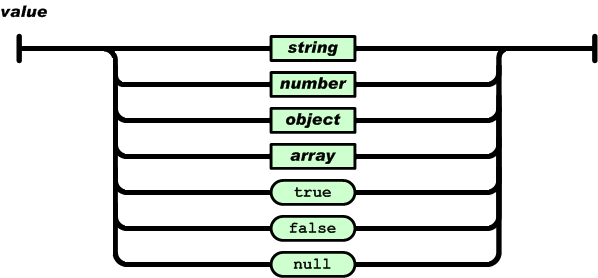

序列化和反序列化
1. 序列化和反序列化
1.1 为什么要序列化
内存中的字典、列表、集合以及各种对象，如何保存到一个文件中？
如果是自己定义的类的实例，如何保存到一个文件中？
如何从文件中读取数据，并让它们在内存中再次恢复成自己对应的类的实例？
要设计一套协议，按照某种规则，把内存中数据保存到文件中。文件是一个字节序列，所以必须把数据转换成字节序列，输出到文件。这就是序列化。
反之，从文件的字节序列恢复到内存并且还是原来的类型，就是反序列化。
1.2 定义
- serialization 序列化
- 将内存中对象存储下来，把它变成一个个字节。 数据结构 → 二进制
- deserialization 反序列化
- 将文件的一个个字节恢复成内存中对象。 二进制 → 数据结构
序列化保存到文件就是持久化。
可以将数据序列化后持久化，或者网络传输；也可以将从文件中或者网络接收到的字节序列反序列化。
Python 提供了pickle 库。
1.3 pickle
Python中的序列化、反序列化模块
| 函数 | 说明 |
|---|---|
| dumps | 对象序列化为bytes对象 |
| dump | 对象序列化到文件对象，就是存入文件 |
| loads | 从bytes对象反序列化 |
| load | 对象反序列化，从文件读取数据 |
1 | import pickle |
1.4 序列化应用
一般来说，本地序列化的情况，应用较少。大多数场景都应用在网络传输中。
将数据序列化后通过网络传输到远程节点，远程服务器上的服务将接收到的数据反序列化后，就可以使用了。
但是，要注意一点，远程接收端，反序列化时必须有对应的数据类型，否则就会报错。尤其是自定义类，必须远程得有一致的定义。
现在，大多数项目，都不是单机的，也不是单服务的，需要多个程序之间配合。需要通过网络将数据传送到其他节点上去，这就需要大量的序列化、反序列化过程。
但是，问题是，Python程序之间可以都用pickle解决序列化、反序列化，如果是跨平台、跨语言、跨协议pickle就不太适合了，就需要公共的协议。例如XML、Json、Protocol Buffer、msgpack等。
不同的协议，效率不同、学习曲线不同，适用不同场景，要根据不同的情况分析选型。
注：目前有6个版本pickle协议，3.4增加了v4，3.8增加了v5（PEP 574）
2. JSON
JSON(JavaScript Object Notation, JS 对象标记) 是一种轻量级的数据交换格式。它基于 ECMAScript
1999年ES3 的一个子集，采用完全独立于编程语言的文本格式来存储和表示数据。
2.1 Json的数据类型
2.1.1 值
双引号引起来的字符串、数值、true和false、null、对象、数组，这些都是值

2.1.2 字符串
由双引号包围起来的任意字符的组合，可以有转义字符。
2.1.3 数值
有正负，有整数、浮点数。
2.1.4 对象
无序的键值对的集合
格式: {key1:value1, … ,keyn:valulen}
key必须是一个字符串，需要双引号包围这个字符串。
value可以是任意合法的值
2.1.5 数组
有序的值的集合
格式：[val1,…,valn]
实例
1 | { |
2.2 json模块
Python 与 JSON
Python支持少量内建数据类型到JSON类型的转换
| Python类型 | Json类型 | 说明 |
|---|---|---|
| True | true | |
| False | false | |
| None | null | |
| str | string | |
| int | integer | |
| float | float | |
| list | array | 数组 |
| dict | object | 对象 |
2.2.1 常用方法
| Python类型 | Json类型 |
|---|---|
| dumps | json编码 |
| dump | json编码并存入文件 |
| loads | json解码 |
| load | json解码，从文件读取数据 |
1 | import json |
一般json编码的数据很少落地，数据都是通过网络传输。传输的时候，要考虑压缩它。
本质上来说它就是个文本，就是个字符串。
json很简单，几乎编程语言都支持Json，所以应用范围十分广泛。
3. MessagePack
MessagePack是一个基于二进制高效的对象序列化类库，可用于跨语言通信。
它可以像JSON那样，在许多种语言之间交换结构对象。
但是它比JSON更快速也更轻巧。
支持Python、Ruby、Java、C/C++等众多语言。宣称比Google Protocol Buffers还要快4倍。
兼容 json和pickle。
3.1 安装
1 | pip install msgpack |
3.2 常用方法
packb 序列化对象。提供了dumps来兼容pickle和json。
unpackb 反序列化对象。提供了loads来兼容。
pack 序列化对象保存到文件对象。提供了dump来兼容。
unpack 反序列化对象保存到文件对象。提供了load来兼容。
1 | import json |
1 | C:\Users\ren_m\Desktop\testpy\venv\Scripts\python.exe C:\Users\ren_m\Desktop\testpy\main.py |
MessagePack简单易用，高效压缩，支持语言丰富。
所以，用它序列化也是一种很好的选择。Python很多大名鼎鼎的库都是用了msgpack。
上例中，之所以pickle比json序列化的结果还要大，原因主要是pickle要解决所有Python类型数据的序列化，要记录各种数据类型包括自定义的类。而Json只需要支持少数几种类型，所以就可以很简单，都不需要类型的描述字符。但大多数情况下，我们序列化的数据都是这些简单的类型。